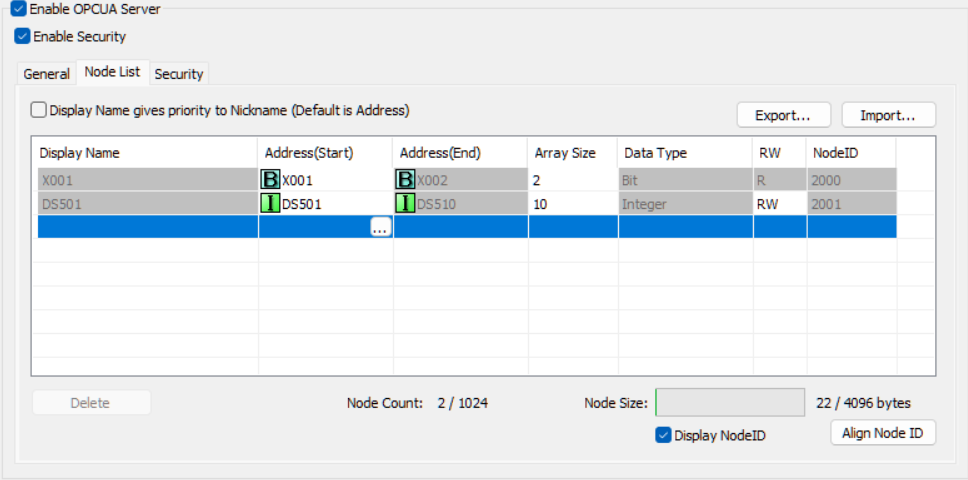

|
|
|
Topic: CL330 |
C2-OPCUA Module Configuration |
|
|
This configuration dialog contains basic network and security settings to get your C2-OPCUA module ready for use.

Network Address Configuration: The OPC UA module must use an IP Address. This enables an OPC UA client to locate and connect to this specific device. DHCP is not supported in OPC UA.
DNS Server: The CLICK Simple Network Time Service (SNTP) feature allows any network connection available on CLICK hardware to be configured as the port used to check the time. If a fully qualified domain name is used in the SNTP configuration and the slot containing the OPC UA module is used as the SNTP port, then you will need to specify a DNS address to be used to look up the IP address of the SNTP server. That is the only reason the DNS configuration on the OPC UA module is used. A common choice is Google’s server at 8.8.8.8 or 8.8.4.4.
Enable Response to Ping from other devices: Checking this box will allow this device to be discoverable via ping. This makes it easier to configure and troubleshoot, but is typically disabled on a production server to reduce the attack profile of the device.
Enable Allow List: Checking this box enables the IP Allow list. Only IP addresses specified in this allow list will be recognized by this server. Any request from any IP address not in the Allow List will be ignored.
Enable OPC UA Server: Be sure to enable OPC UA server. This is off by default to ensure the card is configured and secured before it is available online. If it is NOT enabled, both the OK (green) and ERR (red) LEDs on the C2-OPCUA module will flash. The OK LED will flash quickly (2.5 Hz) and the ERR LED will flash slowly (1 Hz).
Enable Security: Checking this box adds a new tab for Security settings, as show in the Security Tab section below.
TCP Port Number: The default OPC UA port is 4840. Any unused port between 1024 and 65535 can be selected instead if needed.
Endpoint URL: The URL for the C2-OPCUA server is displayed. It may be copied from here to use in your OPC UA client configuration.
Server Name: Enter a user-recognizable name which will be used by the client to identify the server. Allowed characters include alphanumeric (letters and numbers) and hyphens. Often the server name is included in the URL of services provided by this server thus the naming conventions follow standard DNS naming conventions.
Application Certificate: Create a new self-signed Application Certificate. This will open a form to create a new self-signed Application Certificate for this OPC UA server. It also creates a CA-Root certificate that you will need to export from the C2-OPCUA module and then import into your OPC UA Client. This step is required (regardless of security settings) as the C2-OPCUA module validates the certificate as part of the startup process. The C2-OPCUA module cannot use third party, or Certificate Authority (CA) certificates.
Only one certificate may be applied. To replace a certificate, first Delete the existing certificate. If you just need to edit settings or update the certificate's expiration date, click Edit to open and update the certificate. If you edit a certificate, you will need to reload it in the client system.
Export Certificate Will save it to your PC in .der format.
Enable Authentication: This allows the user to define up to 8 usernames and passwords to be usable by OPC UA Clients when requesting data from this server. This option should NEVER be used without enabling security and configuring “Sign and Encrypt”. That process enables encryption; without it, user names and passwords configured here are transmitted in plain text.

Security Policy: Select the Security policy. This should match the security policy you select when setting up the Client. The specific policy determines the encryption algorithm. As a general rule, policies with 256 in them generate more secure packets, but the encryption takes more processing and time.
Sign — Messages are authenticated but NOT encrypted.
Sign and Encrypt — Messages are authenticated AND encrypted.
|
|
NOTE: There is a requirement that Basic256Sha256, Aes128-Sha256-RsaOaep and Aes256-Sha256-RsaPss must use certificates with a Key Size greater than 1024-bit. Otherwise, a connection error response of 0x81080000 will be returned to the client. |
|
User Certificates: For encryption to work, a client system must have a trusted certificate generated by the server, but also the server must have a client certificate. These certificates allow the client and server to verify the identity of the sender, as well as encrypt data being sent to the other device.
OPC UA supports four different security models. Certificates are required for all 4 models:
No Authentication: in this model, all traffic is sent to whatever device requests it, without encryption. All sender certificates are considered Trusted certificates. This is like a bar that doesn’t care what your ID looks like as long as you have one. As a general rule, this is valid for testing and initial setup but is not recommended for production.
Client Authentication: Only the client’s identity is authenticated. The client certificate must be Trusted, but the Server’s certificate is not used.
Server Authentication: Only the server’s certificate is authenticated. The Server’s certificate must be trusted by the Client.
Mutual Authentication: Both the client and server certificates must be trusted. This allows bidirectional encryption and mutual authentication. This is typically the best approach in OPC UA.
For more information on OPC UA security, here are some good references:
OPC UA_Security_Model_for_Administrators_V1.00.pdf
IoT Security Lab: What is OPC UA and how does it manage security

Add addresses to the OPC UA Node List using the Address Picker by clicking the ellipsis icon in the Address(Start) cell of a new row. The rest of the settings in the row will populate automatically based on your selection.
Nodes may be Exported or Imported as comma-separated value files.
A maximum of 1024 nodes comprising 4096 bytes are allowed. To Delete a node, first select the node from the list. Nodes are deleted one at a time.
A maximum Array Size is 128 elements of any data type.
Click OK to save your OPC-UA configuration. When you download your CLICK Project to your PLC, these settings will take effect.
Time (RTC): After the C2-OPCUA module is configured, BE SURE TO SYNC THE PLC TO YOUR PC CLOCK! The C2-OPCUA module shares a clock with your CLICK PLUS PLC. Be sure to update the time in the PLC. If the time is wrong, it may impact the ability of the C2-OPCUA module to authenticate security certificates.
Allow List Setup (C2-OPCUA)
Create Application Certificate
Add/Edit OPC UA Account
Node List Import
Node List Export